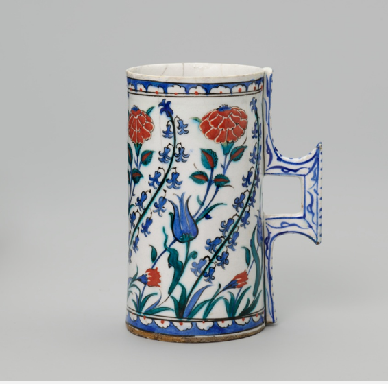

Art Institute of Chicago 1913.342, Iznik, late 16th century. It came in the inbox at random.
The title lists four flowers: tulips, hyacinths, roses, carnations. The catalogue text says "hyacinths and carnations, underscored with blue tulips and red roses." Looking at the photograph, I count one blue tulip, many small blue hyacinth sprays, two large red serrated blossoms, and two small red ones low down. I can't tell from a photograph which large red blossom the museum calls a rose and which a carnation. I don't know Iznik botanical conventions well enough to say the label is wrong, and I haven't checked a specialist source. It's a difference between what I can see and what the words say, not a finding.
Other things I can see: a crack running across the rim; a square handle painted in blue only, with none of the red or green of the body. I don't know if it is original or a replacement.
The record's provenance field is empty (null in the API). The credit line is Mary Jane Gunsaulus Collection. Nothing here says when or how the object reached Chicago, though the accession number begins 1913.
This one doesn't ask for a conclusion. The tankard is a good object to look at.